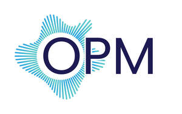
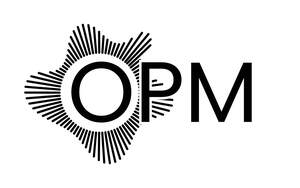

Trade Mark Journal No.2025/049 5 December 2025
UK00004300755 25 November 2025 (9,10,42,44)
Mark 1

Mark 2

- Class 9
- Computer application software for use with wearable computer devices; Wearable computer hardware; Wearable computers; Digital sensors; Wearable digital electronic communication devices; Wearable computer peripheral devices; Electronic sensors; Electronic measurement sensors; Sensors; Electronic device software drivers that allow computer hardware and electronic devices to communicate with each other; Wearable communications apparatus; Wearable monitors; Electronic imaging devices; Biochip sensors; Wearable digital electronic devices capable of providing access to the Internet; Wristband computer devices; Wearable displays; Wearable activity trackers; Laser sensors; Ultrasonic sensors; Bio-sensors; Electro-optical sensors; Oscillation sensor devices; Watchbands that communicate data to other electronic devices; Optical sensors; Electronic pressure sensors; Gyro sensors using GPS functions; Piezoelectric sensors; Vibration sensors; Temperature sensors; Sensors for monitoring physical movements; Infrared sensors; Measuring sensors; Pressure sensors; Wearable communications devices in the form of wristwatches; Wearable computer peripherals; Imaging devices for scientific purposes.
- Class 10
- Ultrasonic sensors for medical use; Temperature sensors for medical use; Oxygen sensors for medical use; Patient monitoring sensors and alarms; Precision sensors for medical use; Telemetry devices for medical applications; Skin temperature indicators for medical use; Sensor apparatus for medical use in monitoring the vital signs of patients; Electronic temperature monitors for medical use; Medical skin enhancement apparatus using lasers; Temperature sensing apparatus for medical use; Physiological monitoring apparatus for medical use; Measuring devices for medical use; Ultrasonic diagnostic instruments for medical use; Physiological measuring apparatus for medical use; Sensor apparatus for medical use in diagnosis; Diagnostic imaging apparatus for medical use; Medical devices; Medical instruments for interstitial thermotherapy of biological tissue; Diagnostic ultrasound apparatus for medical use; Electronic blood oxygen saturation monitors [for medical use].
- Class 42
- Development of measuring probes for biotechnological applications; Design and development of computer software for use with medical technology; Research in measurement technology; Development and testing of computing methods, algorithms and software; Design and development of medical diagnostic apparatus, Design of software for embedded devices, Providing medical and scientific research information in the field of pharmaceuticals and clinical trials.
- Class 44
- Optical imaging for medical diagnostic use; remote monitoring of medical data for medical diagnosis and treatment, medical imaging services, medical tele-reporting [medical services], Remote monitoring of medical data for medical diagnosis and treatment, medical testing for diagnostic or treatment purposes, providing medical support in the monitoring of patients receiving medical treatments, medical evaluation services, medical diagnostic services, medical health assessment services.
Carelight Limited